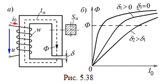
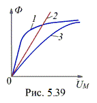

5.4.3.2. ¬ли€ние воздушного зазора в магнитопроводе на режим работы катушки
–ассмотрим вли€ние длины воздушного зазора δ в магнитопроводе (рис. 5.38) на величины, характеризующие работу катушки. ак отмечалось, магнитный поток ‘ зависит только от U, f, w. ѕоэтому можно считать, что магнитный поток от длины зазора δ не зависит.

»з закона ќма дл€ магнитной цепи следует, что при увеличении длины δ увеличиваетс€ магнитное сопротивление Rмэ цепи, но так как магнитный поток ‘ = const, то должен увеличитс€ ток I0 (рис. 5.38б). “аким образом, при разных воздушных зазорах в обмотке протекают разные токи, причЄм значение тока устанавливаетс€ таким, чтобы магнитный поток не изменилс€. —ледовательно, дл€ уменьшени€ тока катушки необходимо уменьшать воздушный зазор у магнитопровода.
¬ебер-амперна€ характеристика катушки с ферромагнитным сердечником и воздушным зазором может быть приближЄнно построена в соответствии с уравнением, составленным по закону полного тока дл€ действующих значений (гистерезис не учитываетс€) величин:
F = wI0 = Hмlм + Hδδ.

«ависимость ‘(Uм) дл€ магнитопровода, как указывалось, при изменЄнных масштабах совпадает с кривой намагничивани€ ¬(Ќ) его материала (крива€ 1 на рис. 5.39), а дл€ воздушного зазора зависимость ‘(Uмδ) линейна€ (пр€ма€ 2, рис. 5.39). —уммиру€ графически при равных потоках ‘ магнитные напр€жени€, т. е. зависимости 1 и 2 по оси абсцисс, получим вебер-амперную характеристику 3 цепи ‘(Uм) = ‘(wI0). јнализиру€ кривые рис. 5.39, можно отметить, что введение воздушного зазора уменьшает нелинейность цепи.